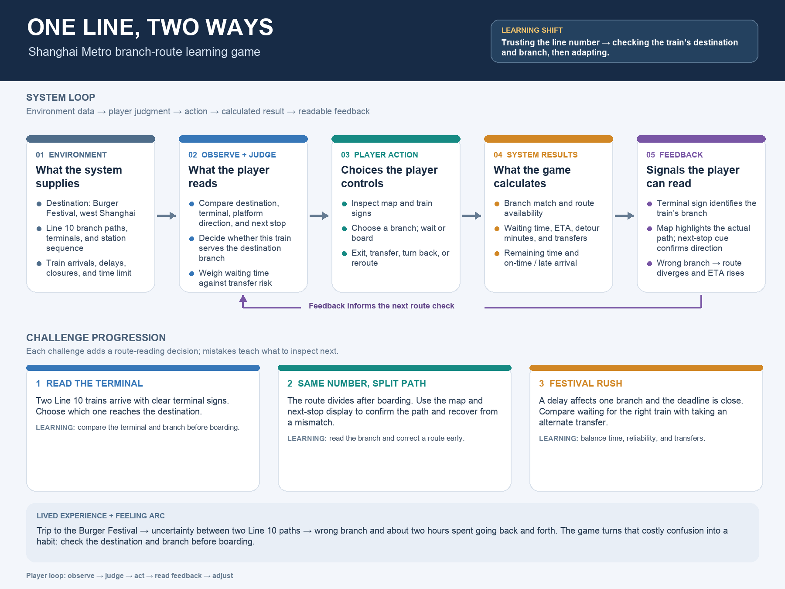

Read the destination signs, branch map and next stop.
A small game about paying attention
One Line,
Two Ways.
Two trains can share a line number and still take different paths. Can you reach the west-side Burger Festival before time runs out?
Start your trip →A short, playable route-reading prototype · 3 trips
LINE 10 / SERVICE MAP
BURGER
FESTIVAL ★
FESTIVAL ★
WEST GATE
RIVER TERMINAL
CENTRAL
Same line.
Different destination.
Different destination.
THE IDEA
A two-hour detour
became a design question.
On a trip across Shanghai, I boarded a Line 10 train without noticing that the service split into two paths. I spent about two hours going back and forth. This game turns that moment into a practical skill: check the destination and route before you board, then recover when the map stops matching your plan.
Explore the domain and system design →THE PLAYER'S JOB
Look closer.
Choose well.
Recover early.
Choose a train by where it goes, not just its number.
Notice a mismatch and transfer before the detour grows.
SYSTEM DESIGN
Every choice changes the trip.

YOUR TRAIN IS APPROACHING